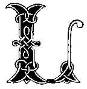
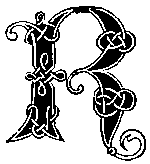

iterary

iddle
This is a URL replacement
riddle. In order to make it to the next level, you must change the name
of the page in the URL. For example, this page is called "start.html,"
so you would need to change the word start
to something
else. If you have tried such riddles before, you have some idea of how
to find the "something else." If not, perhaps you should look here for
help getting started.